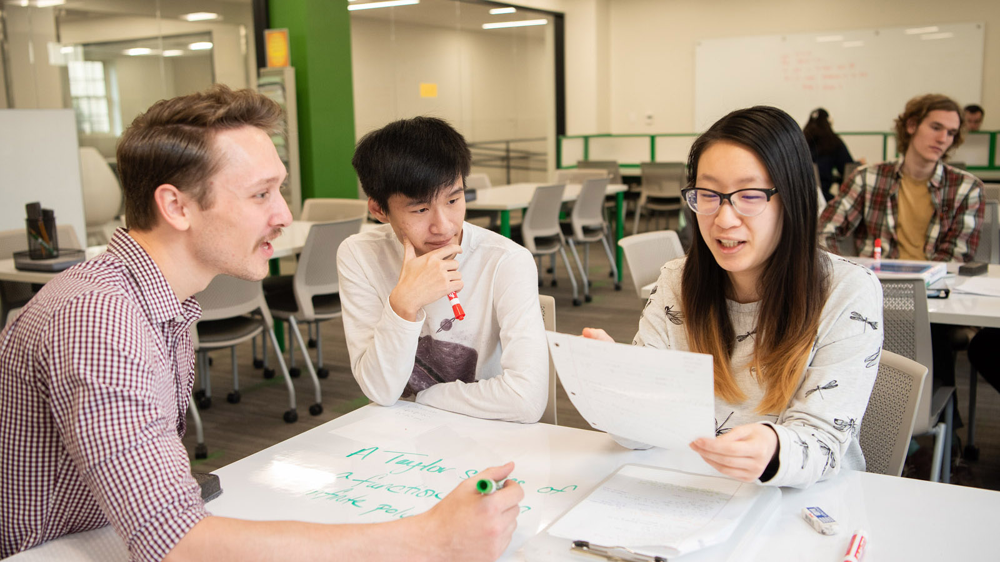
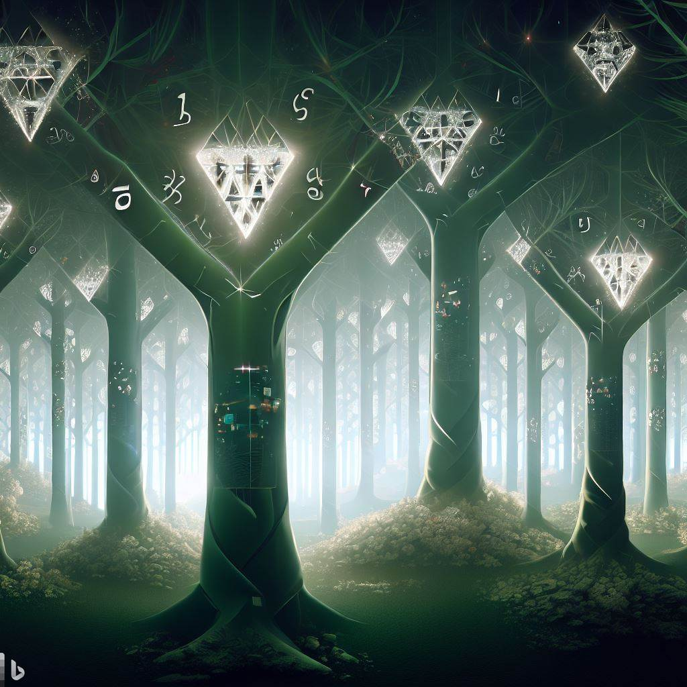

My journey into the world of mathematics began at Pierce Community College. Despite having done very little in K-12 and being the first in my family to pursue a scientific degree, I found a love for mathematical reasoning. This passion was largely due to a great professor at the college who nurtured and encouraged my interest. I remember the first time I saw her sitting there like a student, in fact that's exactly what I thought she was a creepy student staring at everyone entering smiling in a big hoody. Until she got up righhhh as class was about to start and introduced herself and explained that she was a little quirky but was excited to guide us in our mathematical journey. 
I was inspired to pursue a career in mathematics by the story I shared and the meritocratic
nature of the field along with the profound realization that through mathematics, I was learning to understand and even participate in the code of the universe.
For a kid that had just failed "Algebra 2" in high school and had no acaedmic goals
whatsoever this was a powerful guiding realization! This inspiration was not without its challenges. I faced a mix of high confidence and doubt from professors, counselors, and family members. However, my love for music and art provided me with the joy and autonomy needed to persevere and become a published mathematician in an area I find both special and surprising.

My journey didn't stop there. I went on to work with world-class set theorist John Krueger.
Together, we investigated much of his work on forcing and trees. My hope was to extend
results to Shelah ( an absolute titan whose work spans many decades in the field ) on
principles that when assumed in a mathematical universe imply the existence of a
proliferation of combinatorial trees with counter-intuitive properties. It may interest the
reader herein to note that while these properties are very technical on the surface there
are some quite interesting philosophical implications, though dwelling too much on these is
somewhat frowned upon in our strict math circles (so don't tell on me:)).
My paper, titled "Some Results on Non-club Isomorphic Aronszajn Trees", discusses the construction of non-club isomorphic Aronszajn trees with strong rigidity properties. I used the diamond principle to construct a family of 2λ+ many completely club rigid special λ+-Aronszajn trees which are pairwise far. The paper also discusses related results, such as obtaining a large family of Suslin trees with similar properties and generalizing the Abraham-Shelah result on weak diamond to higher cardinals.
Jose Chavez. John Krueger. "Some Results on Non-Club Isomorphic Aronszajn Trees." Notre Dame J. Formal Logic 63 (1) 109 - 120, February 2022. https://doi.org/10.1215/00294527-2022-0007